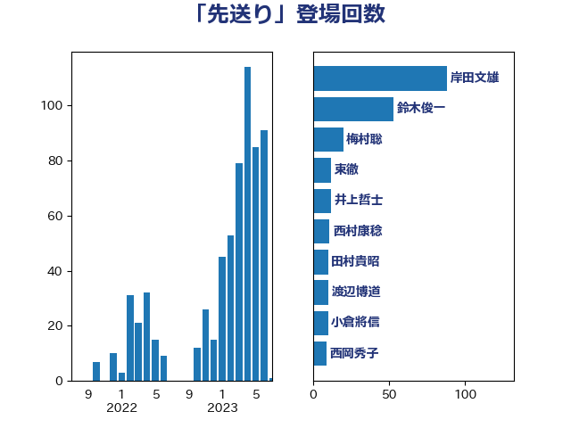

単語「先送り」

| 岸田文雄 | 自由民主党 | 88 回 |
| 鈴木俊一 | 自由民主党 | 53 回 |
| 梅村聡 | 日本維新の会 | 20 回 |
| 東徹 | 日本維新の会 | 12 回 |
| 井上哲士 | 日本共産党 | 12 回 |
| 西村康稔 | 自由民主党 | 11 回 |
| 田村貴昭 | 日本共産党 | 10 回 |
| 渡辺博道 | 自由民主党 | 10 回 |
| 小倉將信 | 自由民主党 | 10 回 |
| 西岡秀子 | 国民民主党 | 9 回 |
| 西村智奈美 | 立憲民主党 | 8 回 |
| 倉林明子 | 日本共産党 | 8 回 |
| 打越さく良 | 立憲民主党 | 7 回 |
| 秋野公造 | 公明党 | 6 回 |
| 漆間譲司 | 日本維新の会 | 6 回 |
| 城井崇 | 立憲民主党 | 6 回 |
| 前川清成 | 日本維新の会 | 6 回 |
| 馬場伸幸 | 日本維新の会 | 5 回 |
| 野田佳彦 | 立憲民主党 | 5 回 |
| 山添拓 | 日本共産党 | 5 回 |
| 山崎正恭 | 公明党 | 5 回 |
| 山井和則 | 立憲民主党 | 5 回 |
| 住吉寛紀 | 日本維新の会 | 5 回 |
| 井上貴博 | 自由民主党 | 5 回 |
| 音喜多駿 | 日本維新の会 | 4 回 |
| 階猛 | 立憲民主党 | 4 回 |
| 紙智子 | 日本共産党 | 4 回 |
| 櫻井周 | 立憲民主党 | 4 回 |
| 横沢高徳 | 立憲民主党 | 4 回 |
| 早稲田ゆき | 立憲民主党 | 4 回 |
| 平山佐知子 | 無所属 | 4 回 |
| 宮本徹 | 日本共産党 | 4 回 |
| 勝部賢志 | 立憲民主党 | 4 回 |
| 中島克仁 | 立憲民主党 | 4 回 |
| 馬淵澄夫 | 立憲民主党 | 3 回 |
| 青木愛 | 立憲民主党 | 3 回 |
| 逢坂誠二 | 立憲民主党 | 3 回 |
| 藤岡隆雄 | 立憲民主党 | 3 回 |
| 緑川貴士 | 立憲民主党 | 3 回 |
| 米山隆一 | 立憲民主党 | 3 回 |
| 笠井亮 | 日本共産党 | 3 回 |
| 竹詰仁 | 国民民主党 | 3 回 |
| 石橋通宏 | 立憲民主党 | 3 回 |
| 牧原秀樹 | 自由民主党 | 3 回 |
| 沢田良 | 日本維新の会 | 3 回 |
| 池畑浩太朗 | 日本維新の会 | 3 回 |
| 柴愼一 | 立憲民主党 | 3 回 |
| 林芳正 | 自由民主党 | 3 回 |
| 斎藤アレックス | 国民民主党 | 3 回 |
| 斉藤鉄夫 | 公明党 | 3 回 |
| 岬麻紀 | 日本維新の会 | 3 回 |
| 岩渕友 | 日本共産党 | 3 回 |
| 小沼巧 | 立憲民主党 | 3 回 |
| 小池晃 | 日本共産党 | 3 回 |
| 守島正 | 日本維新の会 | 3 回 |
| 大塚耕平 | 国民民主党 | 3 回 |
| 堀場幸子 | 日本維新の会 | 3 回 |
| 和田義明 | 自由民主党 | 3 回 |
| 吉川元 | 立憲民主党 | 3 回 |
| 前原誠司 | 国民民主党 | 3 回 |
| 伊藤岳 | 日本共産党 | 3 回 |
| たがや亮 | れいわ新選組 | 3 回 |
| 鬼木誠 | 立憲民主党 | 2 回 |
| 高木かおり | 日本維新の会 | 2 回 |
| 青柳仁士 | 日本維新の会 | 2 回 |
| 阿部司 | 日本維新の会 | 2 回 |
| 金村龍那 | 日本維新の会 | 2 回 |
| 野田聖子 | 自由民主党 | 2 回 |
| 道下大樹 | 立憲民主党 | 2 回 |
| 谷田川元 | 立憲民主党 | 2 回 |
| 蓮舫 | 立憲民主党 | 2 回 |
| 舞立昇治 | 自由民主党 | 2 回 |
| 緒方林太郎 | 無所属 | 2 回 |
| 石川香織 | 立憲民主党 | 2 回 |
| 矢倉克夫 | 公明党 | 2 回 |
| 猪瀬直樹 | 日本維新の会 | 2 回 |
| 榛葉賀津也 | 国民民主党 | 2 回 |
| 森屋隆 | 立憲民主党 | 2 回 |
| 松野博一 | 自由民主党 | 2 回 |
| 松本剛明 | 自由民主党 | 2 回 |
| 村田享子 | 立憲民主党 | 2 回 |
| 末次精一 | 立憲民主党 | 2 回 |
| 川田龍平 | 立憲民主党 | 2 回 |
| 川合孝典 | 国民民主党 | 2 回 |
| 小沢雅仁 | 立憲民主党 | 2 回 |
| 寺田静 | 無所属 | 2 回 |
| 宮本岳志 | 日本共産党 | 2 回 |
| 大西健介 | 立憲民主党 | 2 回 |
| 大石あきこ | れいわ新選組 | 2 回 |
| 大塚拓 | 自由民主党 | 2 回 |
| 大串博志 | 立憲民主党 | 2 回 |
| 佐藤信秋 | 自由民主党 | 2 回 |
| 伴野豊 | 立憲民主党 | 2 回 |
| 伊藤孝恵 | 国民民主党 | 2 回 |
| 井坂信彦 | 立憲民主党 | 2 回 |
| 井上英孝 | 日本維新の会 | 2 回 |
| 三木圭恵 | 日本維新の会 | 2 回 |
| 高橋千鶴子 | 日本共産党 | 1 回 |
| 高木陽介 | 公明党 | 1 回 |
| 高木真理 | 立憲民主党 | 1 回 |
| 高市早苗 | 自由民主党 | 1 回 |
| 長峯誠 | 自由民主党 | 1 回 |
| 長妻昭 | 立憲民主党 | 1 回 |
| 鎌田さゆり | 立憲民主党 | 1 回 |
| 鈴木庸介 | 立憲民主党 | 1 回 |
| 金子恵美 | 立憲民主党 | 1 回 |
| 金子俊平 | 自由民主党 | 1 回 |
| 野間健 | 立憲民主党 | 1 回 |
| 野田国義 | 立憲民主党 | 1 回 |
| 重徳和彦 | 立憲民主党 | 1 回 |
| 里見隆治 | 公明党 | 1 回 |
| 近藤昭一 | 立憲民主党 | 1 回 |
| 辻元清美 | 立憲民主党 | 1 回 |
| 越智隆雄 | 自由民主党 | 1 回 |
| 赤嶺政賢 | 日本共産党 | 1 回 |
| 角田秀穂 | 公明党 | 1 回 |
| 西銘恒三郎 | 自由民主党 | 1 回 |
| 西田昌司 | 自由民主党 | 1 回 |
| 藤田文武 | 日本維新の会 | 1 回 |
| 落合貴之 | 立憲民主党 | 1 回 |
| 萩生田光一 | 自由民主党 | 1 回 |
| 荒井優 | 立憲民主党 | 1 回 |
| 芳賀道也 | 国民民主党 | 1 回 |
| 舩後靖彦 | れいわ新選組 | 1 回 |
| 自見はなこ | 自由民主党 | 1 回 |
| 羽田次郎 | 立憲民主党 | 1 回 |
| 美延映夫 | 日本維新の会 | 1 回 |
| 窪田哲也 | 公明党 | 1 回 |
| 稲富修二 | 立憲民主党 | 1 回 |
| 福山哲郎 | 立憲民主党 | 1 回 |
| 神谷宗幣 | 参政党 | 1 回 |
| 石井苗子 | 日本維新の会 | 1 回 |
| 石井章 | 日本維新の会 | 1 回 |
| 石井正弘 | 自由民主党 | 1 回 |
| 田嶋要 | 立憲民主党 | 1 回 |
| 田名部匡代 | 立憲民主党 | 1 回 |
| 玉木雄一郎 | 国民民主党 | 1 回 |
| 源馬謙太郎 | 立憲民主党 | 1 回 |
| 渡辺周 | 立憲民主党 | 1 回 |
| 浦野靖人 | 日本維新の会 | 1 回 |
| 浜口誠 | 国民民主党 | 1 回 |
| 浅田均 | 日本維新の会 | 1 回 |
| 泉健太 | 立憲民主党 | 1 回 |
| 池下卓 | 日本維新の会 | 1 回 |
| 武井俊輔 | 自由民主党 | 1 回 |
| 櫛渕万里 | れいわ新選組 | 1 回 |
| 梅谷守 | 立憲民主党 | 1 回 |
| 梅村みずほ | 日本維新の会 | 1 回 |
| 柳ヶ瀬裕文 | 日本維新の会 | 1 回 |
| 松木けんこう | 立憲民主党 | 1 回 |
| 志位和夫 | 日本共産党 | 1 回 |
| 徳永久志 | 無所属 | 1 回 |
| 後藤祐一 | 立憲民主党 | 1 回 |
| 岸真紀子 | 立憲民主党 | 1 回 |
| 岡田克也 | 立憲民主党 | 1 回 |
| 岡本三成 | 公明党 | 1 回 |
| 山本順三 | 自由民主党 | 1 回 |
| 山本剛正 | 日本維新の会 | 1 回 |
| 山口那津男 | 公明党 | 1 回 |
| 山下貴司 | 自由民主党 | 1 回 |
| 小田原潔 | 自由民主党 | 1 回 |
| 小林鷹之 | 自由民主党 | 1 回 |
| 小島敏文 | 自由民主党 | 1 回 |
| 奥野総一郎 | 立憲民主党 | 1 回 |
| 太田房江 | 自由民主党 | 1 回 |
| 大島敦 | 立憲民主党 | 1 回 |
| 堂込麻紀子 | 無所属 | 1 回 |
| 吉田統彦 | 立憲民主党 | 1 回 |
| 加藤勝信 | 自由民主党 | 1 回 |
| 伊藤俊輔 | 立憲民主党 | 1 回 |
| 串田誠一 | 日本維新の会 | 1 回 |
| 中野英幸 | 自由民主党 | 1 回 |
| 中西祐介 | 自由民主党 | 1 回 |
| 中村裕之 | 自由民主党 | 1 回 |
| 中川正春 | 立憲民主党 | 1 回 |
| 上田清司 | 国民民主党 | 1 回 |
| おおつき紅葉 | 立憲民主党 | 1 回 |